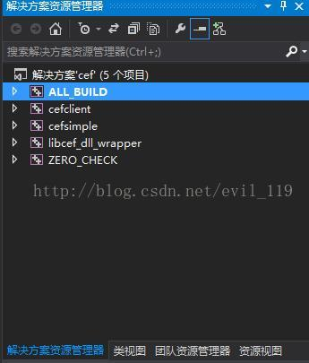

CEF简介
Chromium Embedded Framework (CEF)是个基于Google Chromium项目的开源Web browser控件，支持Windows, Linux, Mac平台。
简单说就是Chrome的开源版，目前很多所谓的双核浏览器，实质就是chrome+IE的双核。基于HTML5的支持，以及v8引擎的效率，在软
件中嵌入chromium是个不错的选择，而且目前市面上应用及其广泛，如：tx系软件。spy++一抓就知道了，如下图
cef下载
下载地址下载速度是不快，但总算下载下来了，由于本人是vs2013，遇到的坑就是3.3以上的版本至少要vs2015以上才能编译，总之搞了很久最后下了一个3.27版本才成功，提示：如果不打算放弃32位就建议下载32位版本吧，不然64位软件在32位系统是跑不起来的。
由于新下载的标准开发包解压就是如下图了，
文件目录结构在此做下说明，很是重要。笔者在此花费了很多时间。
- 首先建议先阅读Readme.txt，该文件对项目结构做了简要说明。当然看一遍肯定不可能完全理解。但随着对项目的熟悉了解，发现该文件说的还是挺清晰的。
- licence.txt没啥说的，就是关于版权的说明。
几个gyp/gypi文件是不能手动修改的，是GYP（Generate Your Projects）工具自动生成的相当于工程配置文件。插入一段GYP说明：
GYP结构
GYP的输入是.gyp和.gypi文件，.gypi文件是用于.gyp文件include使用的。.gyp文件就是符合特定格式的json文件。
gyp文件中包含target，Visual C++下，gyp生成sln，target生成vcproj或vxcproj。
chromium中GYP结构是，通过命令行统一使用build/common.gypi的公共文件，工程的配置，选项的处理，编译选项的使用，都是在这个文件中配置。
生成一个总工程all.gyp，这个工程依赖于其他所有的工程，这个工程生成，所有工程都生成完成。而且有一个总工程也方便开发。
如果要使用GYP，建议依照chromium的结构，common.gypi也用chromium的进行裁剪，毕竟各种选项的选择也是需要经验的。
使用GYP
chromium工程中的方法是使用build/gyp_chromium这个Python脚本来调用，这个脚本实现添加公共配置，侦测附加配置，添加需要的编译选项。
- 然后就是介绍CMakeList.txt文件了，该文件非常重要。这里要引入CMake的一些知识，下载地址：
CMake下载地址
CMake是一个跨平台的安装（编译）工具，可以用简单的语句来描述所有平台的安装(目前很多开源跨平台库都使用此方式如：ProtoBuf，cef)。
CMake脚本本文不做介绍，由于当前用的win平台所以直接下载免安装版解压运行cmake-gui.exe,（说句废话，这是一个qt程序，
跨平台还是选择了qt，呵呵）。
需要注意的就是源代码目录和生成工程文件的目录了，configue没错误就Generate生成相应vs版本工程文件，然后OpenProject，

正常情况就是所有的项目（包括库和测试程序）都包含在这个工程中。libcef_dll_wrapper会生成一个库，cefclient和cefsimple则会生成测试程序，对应下面两张图。
- 文件夹介绍
（1）cmake，该文件夹包含Cmake的一些宏定义，配置信息。
（2）include，使用该库的所有头文件
（3）libcef_dll，库的源代码
（4）tests，测试程序demo源代码
（5）Resource,资源文件
该资源文件是程序运行需要依赖的资源文件，含语言包，unicode支持等
（6）Debug/Release，程序依赖的动态库/静态库。但不包括C++库：libcef_dll_wrapper.lib。
1. 必须文件，缺少任意一个CEF将无法运行：
libcef.dll
这个不用多说，CEF的核心库文件，js引擎、网页加载渲染逻辑等都在其中，也是size最大的一个文件（Release版将近50M，Debug版超过500M）。
icudtl.dat
用来支持unicode，缺少这些文件虽然编译能通过，但是执行CefInitialize();的时候就会崩溃，在这个坑趴了很久还以为是代码问题。
natives_blob.bin
snapshot_blob.bin
V8引擎快照数据。
2. 可选文件：
locales/
该目录包含CEF，Chromium和Blink使用的本地化资源。 CefSettings.locale指定需要加载的.pak文件。 只需要发布配置的区域对应的.pak文件。
如果没有区域设置将配置默认语言环境“en-US”。如果没有这些文件任意Web组件可能显示不正确。
cef.pak
cef_100_percent.pak
cef_200_percent.pak
这些文件包含了供CEF使用的区域无关资源，缺少这些文件任意Web组件可能显示不正确。（笔者当时缺少cef_100_percent.pak，
cef_200_percent.pak两文件，导致视频控件不显示音量和最大化按钮）。
cef_extensions.pak
此文件包含扩展加载所需的非本地化资源传递--disable-extensions命令行标志来禁止使用文件。没有这个文件，依赖于扩展系统的组件将不起作用，
如PDF查看器。
devtools_resources.pak
此文件包含Chrome开发者工具所需的非本地化资源，缺少这个文件，Chrome开发者工具将无法运行。
d3dcompiler_43.dll (Windows XP需要该文件)
d3dcompiler_47.dll (Windows Vista和更高版本的系统需要该文件)
libEGL.dll
libGLESv2.dll
Direct3D支持文件，如果缺少这些文件，HTML5在渲染2D画布，3D CSS，WebGL时将不起作用。
wow_helper.exe
用来支持Windows Vista 64位沙箱。如果没有这个文件，32位的CEF将无法在开启了沙箱的64位的Vista机器上运行。
附MFC使用CEF3简单Demo代码
1 | BOOL CMFCDlgCefTestDlg::OnInitDialog() |
推荐一个不错的文档地址：